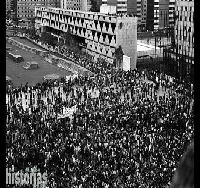
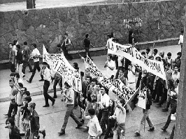
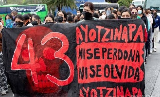

Porqué, causas y consecuencias
Porqué: El movimiento estudiantil de 1968 en México surgió como respuesta al autoritarismo del régimen del PRI, la falta de libertades democráticas y la acumulación de represión social previa. La chispa inmediata fue la brutalidad policial contra estudiantes en julio, lo que unió a la UNAM y al IPN bajo un pliego petitorio que exigía la disolución de los granaderos, la liberación de presos políticos y el cese de la violencia de Estado. Ante la cercanía de los Juegos Olímpicos, el presidente Díaz Ordaz prefirió la represión armada antes que el diálogo, lo que derivó en la trágica matanza de Tlatelolco el 2 de octubre.
Causas: Las causas del movimiento de 1968 se reducen al autoritarismo del régimen del PRI, la falta de libertades democráticas y la represión violenta a protestas previas. A esto se sumó la desigualdad económica del país, la influencia de la rebeldía juvenil global de la época y, de forma inmediata, la brutal agresión policial contra estudiantes en julio de ese año.
Consecuencias: Las consecuencias del movimiento de 1968 incluyeron la pérdida definitiva de legitimidad del PRI y el nacimiento de una sociedad civil más crítica y participativa. Provocó reformas políticas posteriores para abrir espacios a partidos de oposición, el auge de movimientos guerrilleros urbanos y la transformación cultural de las universidades públicas.
¿Qué pasó después?: Tras la represión del 68, el gobierno de Luis Echeverría intentó una "apertura democrática", pero la persecución continuó mediante la "Guerra Sucia" y eventos como la matanza del Jueves de Corpus en 1971. Esto obligó al régimen a promulgar la Reforma Política de 1977, legalizando a los partidos de oposición y abriendo el camino hacia la transición democrática en las décadas siguientes.

¿Por qué?
La matanza del Jueves de Corpus (o El Halconazo) ocurrió el 10 de junio de 1971 porque el régimen priista no estaba dispuesto a permitir que el movimiento estudiantil recuperara las calles tras la tragedia de Tlatelolco. La marcha fue convocada por estudiantes de la UNAM y el IPN en solidaridad con la Universidad Autónoma de Nuevo León, exigiendo democratización educativa y la liberación de los presos políticos que aún quedaban del 68.
Aunque el nuevo presidente, Luis Echeverría, promovía un discurso público de "apertura democrática" y reconciliación con los jóvenes, su gobierno preparó una respuesta violenta en secreto. Para evitar el costo político de usar al ejército de forma directa, el Estado utilizó a un grupo paramilitar clandestino financiado y entrenado por el propio gobierno, conocido como "Los Halcones".
El ataque comenzó cerca de la calzada México-Tacuba, donde este grupo irrumpió armado con varas de bambú y armas de fuego para emboscar la manifestación pacífica. La agresión dejó decenas de estudiantes muertos y heridos, demostrando que los mecanismos de represión del Estado seguían intactos y dando inicio al periodo de persecución política conocido como la Guerra Sucia.:Causas:La causa de fondo del Halconazo fue el temor del régimen priista a que el movimiento estudiantil se reorganizara y tomara fuerza nuevamente tras los hechos de 1968. A pesar de que el presidente Luis Echeverría proyectaba un discurso de reconciliación con la juventud, la intolerancia del gobierno hacia la protesta social callejera se mantuvo intacta y dispuesta a actuar en la clandestinidad.
El detonante inmediato fue una marcha pacífica organizada el 10 de junio de 1971 por estudiantes de la CDMX en solidaridad con la Universidad Autónoma de Nuevo León, que exigía su autonomía frente a la imposición gubernamental. Además, la manifestación retomaba las exigencias inconclusas del 68, como la democratización de la enseñanza, la desaparición de leyes represivas y la libertad de los presos políticos.
Para frenar la protesta sin el costo político de usar al ejército de forma directa, el Estado financió y entrenó en secreto a un grupo paramilitar apodado "Los Halcones". La causa final de la tragedia fue la orden gubernamental de enviar a este grupo de choque a emboscar a los manifestantes con armas de fuego cerca de la calzada México-Tacuba, mientras la policía regular observaba y permitía la agresión.Consecuencias:Como consecuencia directa de la matanza, el discurso de "apertura democrática" del presidente Luis Echeverría quedó completamente destruido, evidenciando ante la sociedad que el régimen no toleraría la protesta pacífica. Esto provocó una profunda radicalización en una parte de la juventud, que al ver cerradas las vías legales de participación, decidió unirse a movimientos guerrilleros urbanos y rurales para combatir al Estado por la vía armada.
Ante el aumento de la insurgencia, el gobierno desató el periodo conocido como la Guerra Sucia, caracterizado por el uso sistemático de la violencia de Estado, desapariciones forzadas, tortura y ejecuciones extrajudiciales para exterminar a los grupos disidentes. A nivel político interno, el evento provocó la renuncia del regente de la Ciudad de México, Alfonso Martínez Domínguez, a quien Echeverría utilizó como chivo expiatorio para deslindarse de la autoría intelectual del ataque.
A largo plazo, el costo social y la pérdida de legitimidad obligaron al régimen a buscar una salida política años más tarde. Esto culminó en la Reforma Política de 1977, la cual abrió las puertas a la legalización de partidos de oposición y de izquierda, permitiendo que las demandas de democratización que los estudiantes defendían en las calles comenzaran a canalizarse, finalmente, por la vía institucional.

El porqué: El porqué de la desaparición de los 43 estudiantes de Ayotzinapa, ocurrida entre el 26 y 27 de septiembre de 2014 en Iguala, Guerrero, radica en una profunda red de complicidad institucional donde las fronteras entre el crimen organizado y las autoridades locales de todos los niveles de gobierno estaban completamente borradas. Los jóvenes de la Normal Rural "Raúl Isidro Burgos", una institución históricamente combativa y de izquierda, se convirtieron en el blanco de una respuesta armada brutal al quedar atrapados en una violenta pugna por el control territorial de las rutas de tráfico de drogas en la región. Causas: Las causas del ataque comenzaron con la movilización de los normalistas hacia Iguala para tomar autobuses comerciales, una práctica recurrente que utilizaban para transportarse a la Ciudad de México para la marcha conmemorativa del 2 de octubre. Sin embargo, los estudiantes ignoraban que algunos de los autobuses de esa central eran utilizados en secreto por el cartel local Guerreros Unidos para el tráfico de heroína hacia Estados Unidos. Al intentar llevarse los vehículos, las autoridades municipales y los criminales interpretaron la acción como una incursión enemiga o un peligro directo para su millonario negocio, desatando una cacería civil-militar.
La causa inmediata de la tragedia fue la orden directa de frenar a los jóvenes a cualquier costo, ejecutada por policías municipales de Iguala y Cocula en colusión con el crimen organizado, bajo la vigilancia y omisión deliberada de fuerzas federales y del ejército mexicano. Tras varias persecuciones y balaceras que dejaron seis personas muertas en el lugar, los policías arrestaron ilegalmente a los 43 normalistas y los entregaron a los miembros del cartel, quienes se encargaron de desaparecerlos sin que hasta el día de hoy se conozca con total certeza el destino final de la mayoría de ellos. Consecuencias: Como consecuencia, este crimen de Estado provocó una crisis humanitaria y de legitimidad internacional sin precedentes para el gobierno de Enrique Peña Nieto, sepultando la credibilidad de su llamada "Verdad Histórica" debido a la alteración de pruebas y la tortura a detenidos. A largo plazo, el caso Ayotzinapa se convirtió en el símbolo de la impunidad y la crisis de desapariciones en México, catalizando un profundo descontento social que reconfiguró el mapa político del país y dejando una herida abierta en la exigencia de justicia y verdad por parte de las familias.